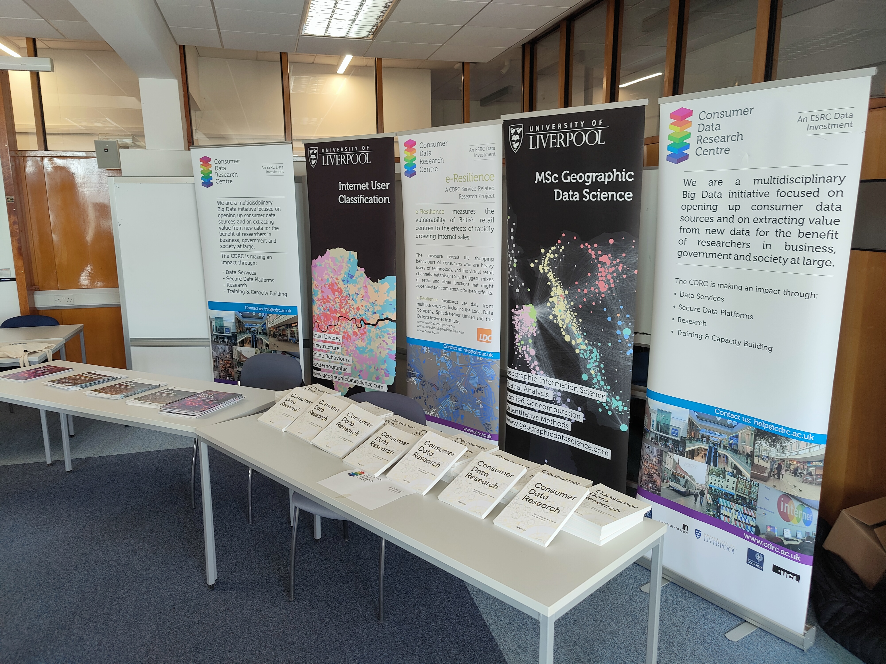
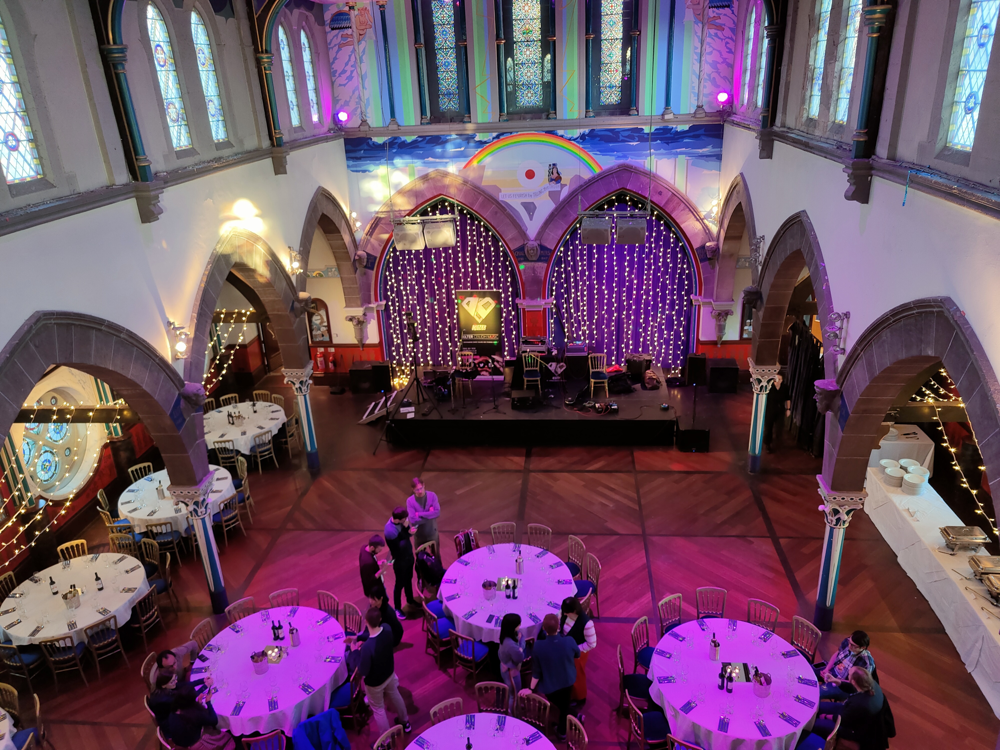

GISRUK Conference - April 2023
University of Glasgow, Glasgow, UK
GISRUK 2023 - University of Glasgow
Annual conference showcasing cutting edge research in the field of Geographic Information Science. This year’s conference was hosted at the University of Glasgow, with highlights including early-career workshops, keynotes from Chris Brunsdon, Nick Malleson and Abigail Page, as well as a large number of posters and presentations.
GISRUK represents one of the biggest calendar events for researchers and industry experts in the UK and internationally, consisting of a day of workshops for early-career researchers (ECRs) on the 18th April, followed by the main conference from the 19th - 21st April.
This year I represented the CDRC, who acted as one of the sponsors for the conference, alongside others such as ESRI, Urban Big Data Centre (UBDC) and Geovation. In particular, along with other CDRC colleagues, we ran an exhibition stand across the week, promoting all the work we do at the CDRC, and distributing lots of CDRC merchandise.
A really common theme in lots of the sessions was the vast potential of new forms of data or digital footprints data, as well as the ways in which we can use ChatGPT to support out analyses as researchers. I took a lot away from the sessions, and have begun to formulate lots of ideas for future research projects around urban mobility, neighbourhoods, and the use of emerging sources of data and technologies to answer important questions.
The conference was also an excellent opportunity for me to re-engage with the wider GIS/GIScience academic research community following completion of my PhD, expanding my network and establishing future collaboration opportunities, whilst also giving me the time to explore and enjoy everything Glasgow has to offer.
A huge kudos to Ana and Guy for another excellent GISRUK - looking forward to Leeds GISRUK in 2024!
Photos


